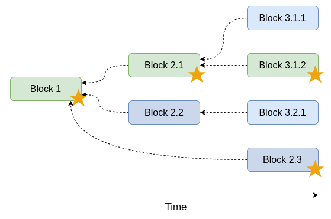

(Press ? for help, n and p for next and previous slide)
A one-way function taking any data (a message) returning a fixed-size string (a hash)
Bitcoin is the King message_i_c_i_ _s_t_e_K_n_ 9 characters___c___ ___t___K___ 4 charactersc tK hashtn g hash___t___n___ ___ ___g_u_t_o_n_i_ _h_ _i_gButtcoin is the King message
hash(Bitcoin is the King) = c tK
hash(Buttcoin is the King) = tn g
Alice shares a hash of a solution for a problem without revealing the solution itself
SHA-256 is a cryptographic hash function used in bitcoin
>>> hashlib.sha256('Bitcoin').hexdigest() 'b4056df6691f8dc72e56302ddad345d65fead3ead9299609a826e2344eb63aa4'
A difficult to solve problem, but easy to verify
More rows and columns — more difficult to solve
A database of bitcoin transactions organized as a chain of blocks
A problem in a digital cash schemes that the same single digital token can be spent more than once
A central authority maintaining a database
The central authority can
The central authority serves as a synchronization mechanism
We will get a tree if anyone can create new blocks…

Adjust amount of required work (difficulty) to add new block such that on average the whole network finds a new block every 10 minutes
Reward
Bitcoin blockchain